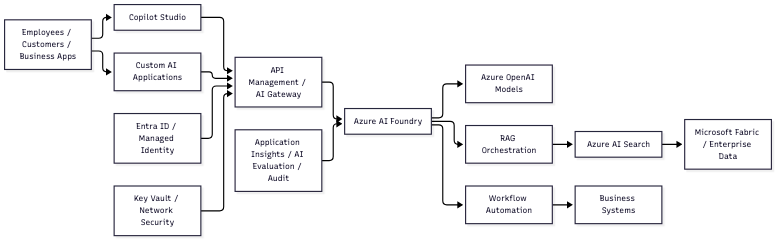

Enterprise AI Architecture
Reference
The role describes a production enterprise AI
platform, not a single chatbot.

How the Pieces Fit
- Copilot Studio provides governed conversational
experiences, agent authoring, and low-code workflow automation.
- Microsoft Foundry is a complementary engineering
and operations platform for custom code-based agents, model management,
testing, evaluation, tracing, deployment, and lifecycle governance. It
is not required for agents authored in Copilot Studio.
- Azure OpenAI supplies language, reasoning,
embedding, and possibly multimodal models.
- RAG solutions retrieve approved enterprise
knowledge before generating answers. Azure AI Search would typically
provide indexing, hybrid or vector search, filtering, and
citations.
- Microsoft Fabric provides the data foundation:
lakehouse data, warehouse data, pipelines, semantic models, and
analytics.
- Workflow automation connects agents to systems such
as CRM, ERP, ticketing, HR, or field operations platforms. Agents should
call controlled APIs and tools rather than receive unrestricted database
access.
- API Management or an AI gateway centralizes
authentication, rate limits, logging, prompt and model controls, content
filtering, and cost management.
- Entra ID, managed identities, Key Vault, private networking,
and RBAC provide identity and security boundaries.
- Application Insights, platform evaluations, audit logs, and
dashboards monitor quality, latency, failures, token usage,
security events, and business outcomes. Foundry evaluations are
especially relevant when custom Foundry agents or model workflows are
part of the solution.
- CI/CD and governance move agents and prompts
through development, evaluation, approval, and production with
versioning and rollback.
Managerial Architecture
Responsibility
The manager’s responsibility is to make this platform reliable at
enterprise scale:
- Define reusable patterns for agents, RAG, tools, workflows, and
integrations.
- Establish security, compliance, responsible-AI, and data-access
controls.
- Ensure retrieval is permission-aware and answers are grounded in
approved sources.
- Create engineering standards for testing, evaluation, observability,
deployment, and rollback.
- Lead teams that deliver agents across multiple business
workflows.
- Connect the technical roadmap to business value, adoption, operating
ownership, and delivery feasibility.
Interview Framing
A concise way to explain the architecture is:
I see this as a governed enterprise AI platform. I built the agents
in Copilot Studio because it was the right platform for governed
conversational experiences and workflow automation. Microsoft Foundry is
the complementary engineering platform for scenarios requiring custom
orchestration, deeper evaluation, tracing, or advanced model operations.
Azure OpenAI provides the models, Azure AI Search grounds responses in
approved knowledge, and Fabric supplies the enterprise data foundation.
API, identity, security, evaluation, and observability layers make the
solutions production-ready. The manager’s job is to choose the right
platform and turn these capabilities into repeatable engineering
patterns and business workflows rather than isolated prototypes.
This is an inferred reference architecture based on the role
description. The position may use different Azure services or have some
layers already established.